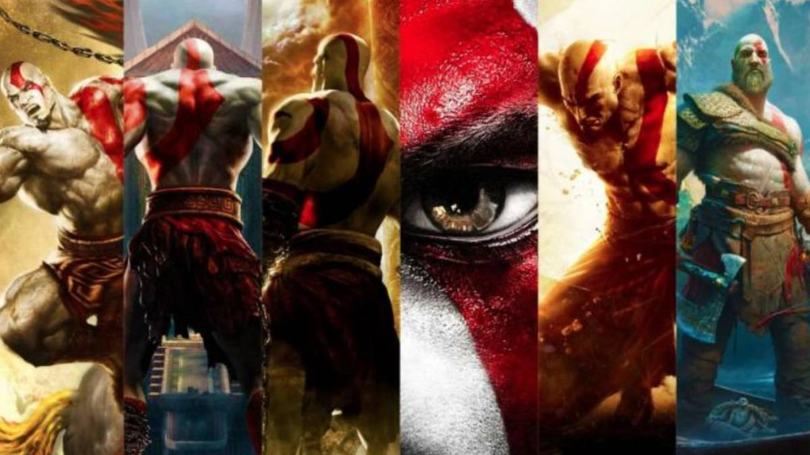

Aquí encontrarás algunos de los videjuegos que hacen parte de las consolas de Play Station (PS)
que se han robado toma mi atensión. Cada vez que me siento frente a la consola y la pantalla de
mi TV, siento que viajo adentro de cada videojuego, me los disfruto de una manera estúpenda!
La mayorías de los videojuegos que me gustan son de Aventura, pero la FIFA me gusta porque me
encanta el futbol.
Aprovecho este espacio para darselos a conocer y que conozcan un poco de su historia, espero les
quede gustanto tanto como a mi.
- GOD OF WAR
- FIFA
- DANTE'S INFERNO
- ASSANSSIN'S CREED
GOD OF WAR

God of War es una franquicia de videojuegos hack and slash creada por SCE Santa Monica
Studio y distribuida por
Sony Computer Entertainment. Se basa en las aventuras de un semidiós espartano,
Kratos, quien se enfrenta
a diversos personajes de la mitología griega y nórdica, tanto héroes
(Heracles, Teseo, Perseo, etc.); especies
mitológicas (gorgonas, arpías, o minotauros); dioses griegos
(Ares, Poseidón, Zeus, entre otros), titanes
(como Cronos) y dioses primordiales (como Gaia). Aunque el
guerrero espartano acostumbra enemistad con la
mayoría de los dioses, recibe ayuda de muchos de ellos
en algún momento de cada entrega, en especial de Atenea.